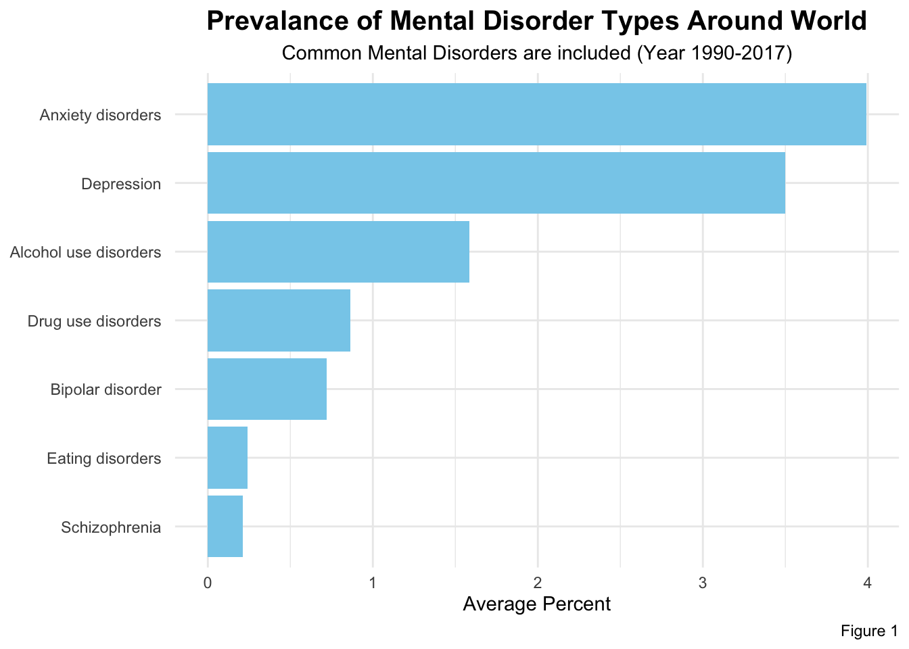
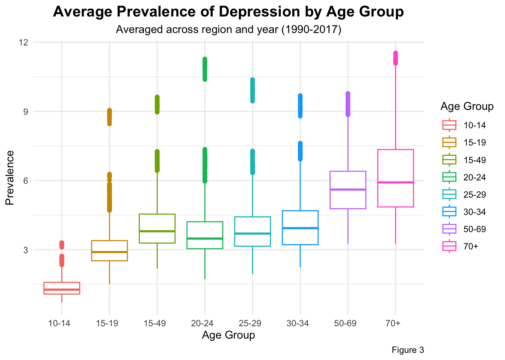
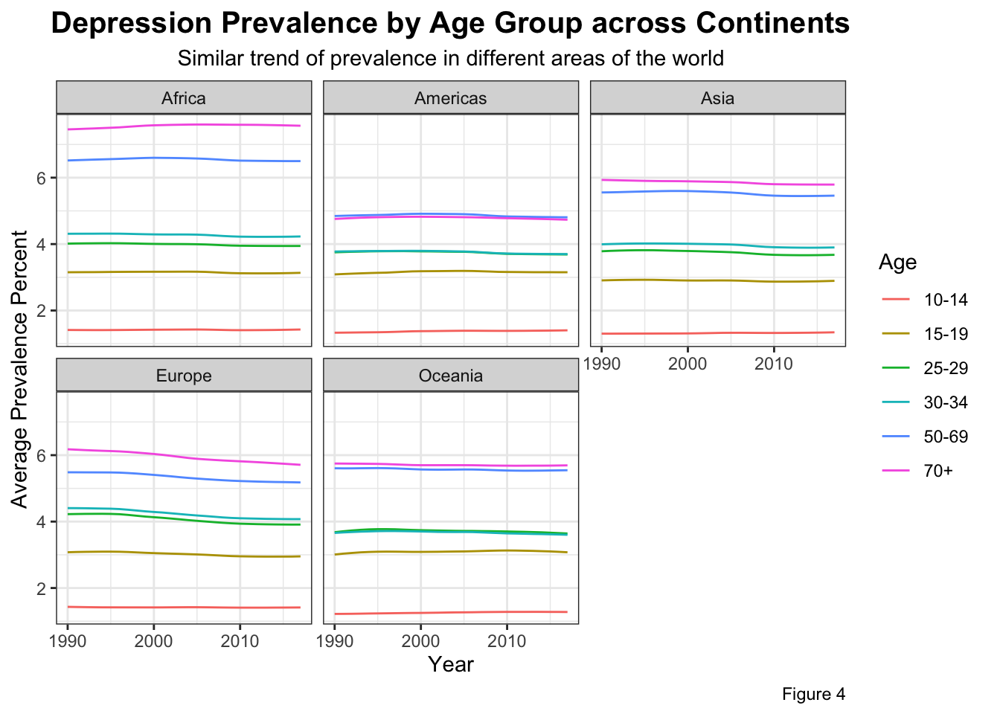

Each person is composed of many types of emotions: fear, anger, happiness, sadness, etc. As we grow up, we might experiencing more complex and more diverse emotions. Without appropriate skills and abilities, we might lose control in dealing with our emotions and might have the risk of experiencing mental disorders.
The awareness that mental health is as important as physiological health is increasing in recent days. With the world developing so rapidly, there are improved treatments and diagnosis, as well as diverse services provided around world to help improve people’s mental well-being. In order to help better support human beings’ mental health, it is important to understand the trend of mental health status, so that better future treatments, policies, and services could be developed.
Please seek for external help from professionals if you are experiencing mental health crisis, or simply need more resources.
Research Question:
1. What is the distribution of different types of mental health disorders around world?
2. Will the risk of having depression prevalence change by age?
3. How does the risk of depression differ in different regions of the world?
Target Audience:
The intended audience for this analysis are researchers who are interested in knowing the trend of mental health disorders around the world in order to better inform future policy-making and/or treatments.
The original data comes from the website Our World in Data, a website where researchers aim to solve world-wise problems. The data frames analyzed here come from a specific blog How do researchers study the prevalence of mental illnesses? written by Saloni Dattani.
Two datasets are analyzed here: Prevalence by mental and substance & Prevalence of depression by age. In Prevalence by mental and substance, the dataset includes data about prevalence of common types of mental health disorders around the world from year 1990 to 2017. In Prevalence of depression by age, the dataset includes data about prevalence of depression among different age groups around the world from year 1990 to 2017.
Unique identifier for each country or region included in the data set
Code
String
Unique code associated with an Entity/Country or region included in the data set
Year
Integer
Year that the data about that particular Entity/Country was collected
20-24 years old (%)
Float
Percentage of people between 20 and 24 years old with depression in that country/region during that year
10-14 years old (%)
Float
Percentage of people between 10 and 14 years old with depression in that country/region during that year
All ages (%)
Float
Percentage of people from all ages with depression in that country/region during that year
70+ years old (%)
Float
Percentage of people above 70 years old with depression in that country/region during that year
30-34 years old (%)
Float
Percentage of people between 30 and 34 years old with depression in that country/region during that year
15-19 years old (%)
Float
Percentage of people between 15 and 19 years old with depression in that country/region during that year
25-29 years old (%)
Float
Percentage of people between 25 and 29 years old with depression in that country/region during that year
50-69 years old (%)
Float
Percentage of people between 50 and 69 years old with depression in that country/region during that year
Age Standardized (%)
Float
Percentage of people with depression in that country/region during that year after standardizing age
15-49 years old (%)
Float
Percentage of people between 15 and 49 years old with depression in that country/region during that year
Note
There are other datasets that are not used in this example analysis, but are included in the data file.
Data Analysis:
1: What is the distribution of different types of mental health disorders around the world?
names(df1) <-str_extract(names(df1), "^[^\\(]+") # get rid of parenthesis in disorder namesprevalence <- df1 |>summarise(across(-c(1:3), ~mean(.x, na.rm =TRUE))) |># calculate average percent for each type of mental disorderpivot_longer(cols =everything(),names_to ="Mental Disorder Type",values_to ="Average Percent" ) # change to long dataprevalence <-as.data.frame(prevalence) |>arrange(desc(`Average Percent`))ggplot(prevalence, aes(y =reorder(`Mental Disorder Type`, `Average Percent`), x =`Average Percent`))+geom_bar(stat ="identity", fill ="skyblue")+labs(title ="Prevalance of Mental Disorder Types Around World", subtitle ="Common Mental Disorders are included (Year 1990-2017)", caption ="Figure 1", y =NULL)+theme_minimal()+theme(plot.title =element_text(hjust =0.5, face ="bold", size =15), plot.subtitle =element_text(hjust =0.5))

There are several types of Anxiety Disorders: (Guy-Evans 2023)
names(df1) <-str_remove(names(df1), "disorders?") # Remove 'disorder' or 'disorders' from column namescor_matrix <-round(cor(df1[,-c(1:3)]), 2)par(mar =c(5, 4, 3, 2)) # Adjust bottom, left, top, and right marginscorrplot.mixed(cor_matrix, order ='AOE', tl.cex =0.6, sub ="subtitle",title="Correlation Matrix of Common Mental Disorders Across World", mar =c(1, 0, 2.3, 0) )mtext("Both size and numerica values of correlation are shown:", # add subtitleside =3, # Top sideline =0.5, # Position the subtitlecex =0.9# Subtitle font size )mtext("Figure 2", # add captionside =1, # Bottom sideline =4, # Position the captionadj =1, # Right-align the textcex =0.7# Caption font size )
2: Will the risk of having depression prevalence change by age?
df2_continent <- df2 |>mutate(continent =countrycode(Entity, origin ="country.name", destination ="continent")) |>filter(!is.na(continent))names(df2_continent) <-str_extract(names(df2_continent), "^[^\\(]+") # get rid of parenthesis in disorder namenames(df2_continent) <-str_remove(names(df2_continent), "years old")df2_continent |>pivot_longer(cols =c(4:5, 7:11, 13),names_to ="age_group",values_to ="prevalence" )|>ggplot(aes(y = prevalence, x = age_group, color = age_group))+geom_boxplot()+labs(title ="Average Prevalence of Depression by Age Group", subtitle ="Averaged across region and year (1990-2017)",caption ="Figure 3", x ="Age Group", y ="Prevalence", color ="Age Group")+theme_minimal()+theme(plot.title =element_text(hjust =0.5, face ="bold", size =15),plot.subtitle =element_text(hjust =0.5))

3: How does the risk of depression differ in different regions of the world?
df2_continent |>group_by(continent, Year) |>summarise(across(c(4:10), ~mean(.x, na.rm =TRUE))) |>select(-`All ages `) |>pivot_longer(cols =-c(1:2),names_to ="Age",values_to ="Avg_Percent" ) |>ggplot(aes(x = Year, y = Avg_Percent, color = Age))+geom_line()+facet_wrap(~continent, ncol =3)+theme_bw()+labs(title ="Depression Prevalence by Age Group across Continents", subtitle ="Similar trend of prevalence in different areas of the world", caption ="Figure 4", y ="Average Prevalence Percent")+theme(plot.title =element_text(hjust =0.5, face ="bold", size =15),plot.subtitle =element_text(hjust =0.5))

Summary:
Results
According to Figure 1, different types of mental disorders distribute differently in the world. After averaging across regions and years between 1990 and 2017, Anxiety Disorders and Depression are the two most prevalent disorders, followed by Alcohol Use Disorder and Drug Use Disorders, with Schizophrenia having the lowest prevalence.
According to Figure 2, most common mental disorders are positively correlated to other types of mental disorders: Anxiety is strongly correlated with Eating Disorders, Bipolar Disorders, and Drug Use Disorder, and is moderately correlated with Bipolar Disorder; Schizophrenia is moderately correlated with Eating Disorders and Anxiety; and Drug Use Disorder is moderately correlated with Eating Disorders.
According to Figure 3, the prevalence of Depression tend to increase as people age. Specifically, there is a significantly higher prevalence among people who are 50+ years old compared to people who are <50 years old. Additionally, teenagers are less likely to have Depression compared to elder people.
According to Figure 4, different regions around the world tend to have similar pattern of the prevalence of Depression among different age groups: from year 1990 to 2017, the prevalence of Depression is almost stable for all regions; elder people (50+ years old) have higher prevalence of Depression while teenagers have the lowest prevalence, and prevalence increase as people age.
Conclusion
Based on the above results, the following conclusions could be made. First, different types of common mental health disorders have different prevalence, with Anxiety and Depression are the most prevalent, and schizophrenia being the least prevalent among the world population between year 1990 and 2017. In addition, people tend to have multiple mental disorders at the same time, showing a high risk of comorbidity among the world population. Second, people have higher risk of getting Depression as people age, especially after 50 years old. Third, the pattern that people have higher risk of getting Depression remains stable across different regions in the world.